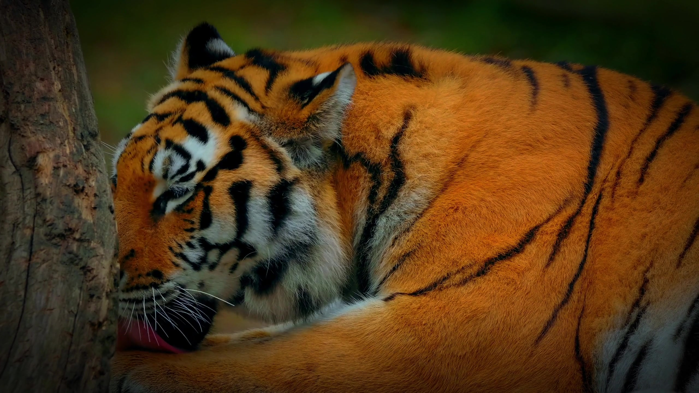
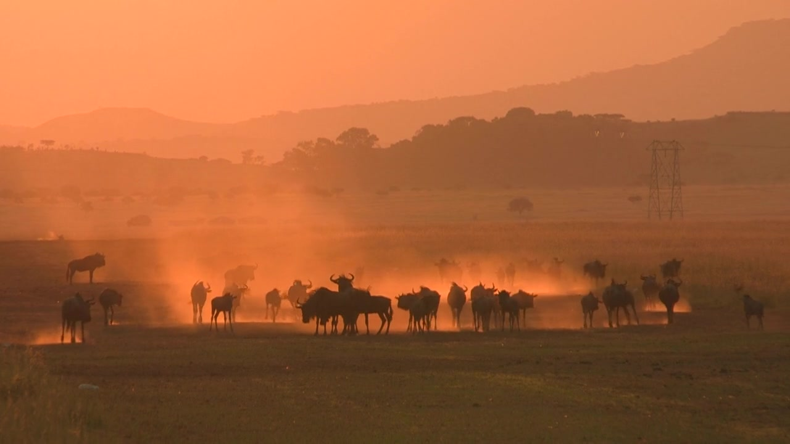
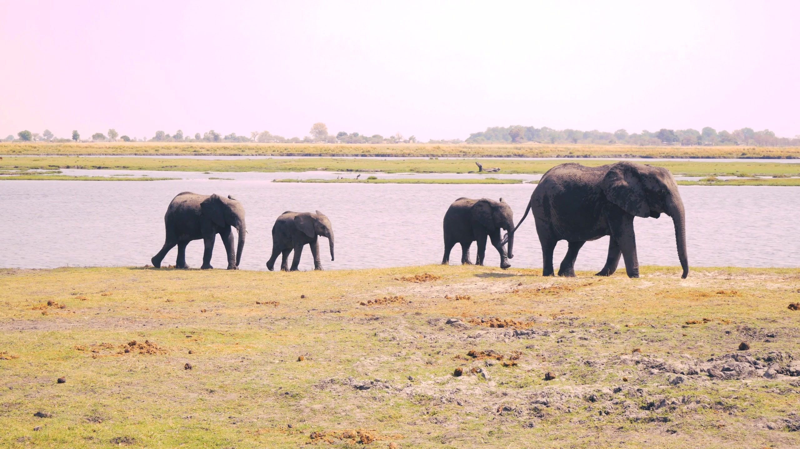
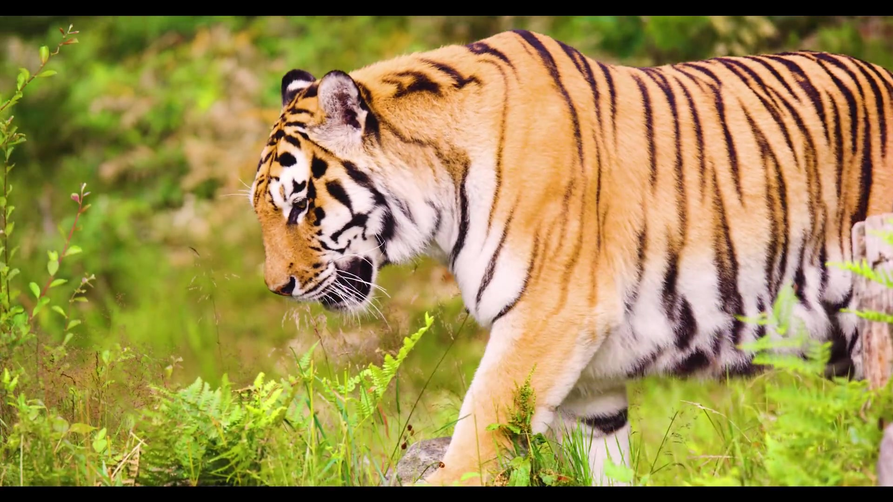
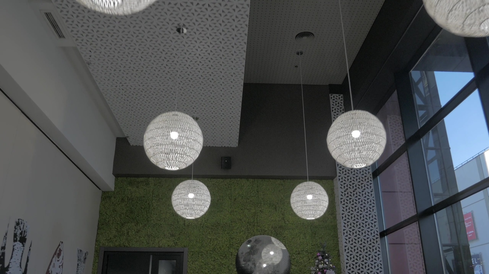
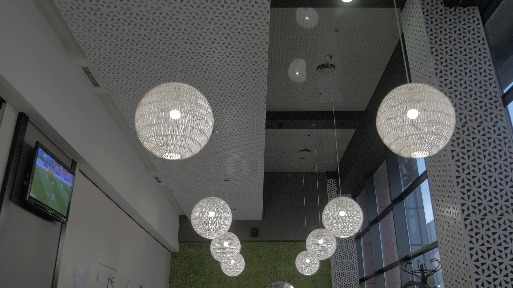
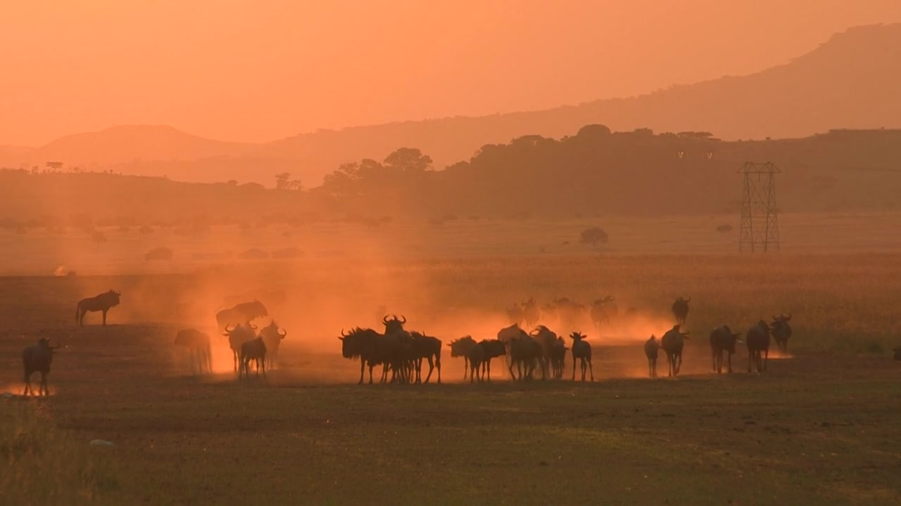

01 / ROYAL BENGAL TIGER01 06

FOREST / LAST LIGHTJIM CORBETT · UTTARAKHAND
ENTER
THE WILD.
Ancient sal forests, the Kosi River and the Royal Bengal Tiger — one unforgettable wilderness, experienced slowly.
Explore Corbett ↓SCROLL TO MOVE THROUGH CORBETT ↓
02 06
01 / PREDATOR
Bengal Tiger
Panthera tigris
02 / HERD
Asian Elephant
Elephas maximus
03 / WILDLIFE
Forest Encounter
Jim Corbett01 — WILDLIFE
MEET THE
WILD.
From Bengal tigers and Asian elephants to elusive leopards, every track tells a story in Corbett.
THE LAND
03 06
02 — THE SAFARI
FOLLOW
THE TRACK.
Leave before sunrise, follow fresh pugmarks and let an experienced naturalist read the forest ahead.
Plan a safari ↓DHIKALA · JHIRNA · BIJRANI
04 06

THE RETREAT
Forest-facing luxury.

FOREST SUITE
Quiet by design.
03 — THE STAY
STAY CLOSE
TO THE WILD.
Forest-facing rooms, warm timber and quiet mornings — comfort designed to keep nature at the centre.
Discover the stay ↓CORBETT · PRIVATE RETREAT
05 06
04 — THE JOURNAL
STORIES
FROM THE WILD.
River light, forest trails and slow evenings — field notes from a landscape that rewards attention.
Read the journey ↓06 06

05 / LAST LIGHT05 — PLAN YOUR JOURNEY
YOUR CORBETT
STORY STARTS HERE.
Curated safari days · luxury stays · local experiences.
Request your itinerary ↗